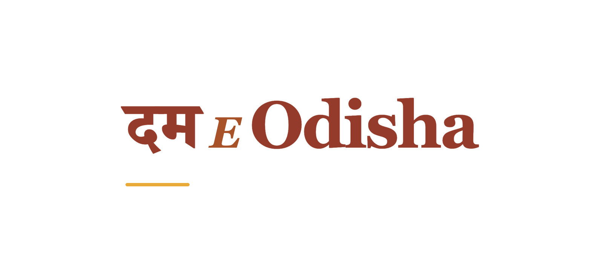

02 / A mixed-script logo experiment
The Hindi beginning.
The opening word दम gives the name a compact, confident Devanagari anchor. E Odisha stays in Latin, so the name feels mixed by design rather than split into two competing translations.

दम E Odisha
Why it works
One strong opening.
The substantial Devanagari strokes match the confident Latin serif weight. A quiet saffron rule grounds the name, while the separate illustration provides the welcoming tone. Neither the lid nor a graphic cuts across a matra.
Each experiment changes one whole name unit. Read all three as Dum E Odisha. The symbol can sit alongside the name or work alone.


An alternative without the illustration
Let the lettering
carry the identity.


Script comes before decoration.
The artwork uses local Noto Serif Devanagari plus Georgia for Latin. Native words remain whole Unicode strings, including the vowel signs. The HTML sources preserve the lettering; PNG exports capture the browser’s actual shaping.
These are proposed transliterations and visual experiments. A qualified Hindi reader has not yet reviewed pronunciation, preferred name spelling or typographic balance. That review should happen before adoption.